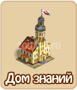

Получено: файл; исходный URL. Первая иллюстрация строки каталога; авторство не подтверждено. Идентичность изображения при замене домена не проверена. Страница: источник.

Дом знаний
браузерная версия; платформа и дата редакции не установлены- Тип
- Постройка
- Версия и дата
- браузерная версия; платформа и дата редакции не установлены
Данные по источнику · браузерная версия; платформа не установлена · дата редакции списка не установлена
Предварительно: Прочитан список. Имена файлов пиктограмм приводятся как есть: они не гарантируют идентификацию материала. Alt-атрибуты источника содержат ошибки. Отдельная статья и дата не проверены.. Требуется сверка.
- Сведения из списка, включая имена файлов пиктограмм
- [рисунок: dom_znaniy.jpg] 55 000 Стадии строительства: 1. 15 [рисунок: Knigi.jpg] + 20 [рисунок: rogatka.jpg] + 05 [рисунок: Lepestki_rozy.jpg] 2. 20 [рисунок: Mel.jpg] + 05 [рисунок: milo.jpg] + 15 [рисунок: Rezina.png] 3. 10 [рисунок: skakalka.jpg] + 05 [рисунок: slezi_zombi.jpg] + 25 [рисунок: Nog_dlya_bumagi.jpg] Даёт возможность: создавать Карандаши: 1. 01 [рисунок: karandashi.jpg] = 01 [рисунок: rogatka.jpg] + 01 [рисунок: tochilka.jpg]
Данные по источнику · браузерная игра; платформа не указана · 07.10.2012 — дата URL, редакция не установлена
Предварительно: Отдельная статья. Картинки загружаются с zombia.ru; возможное заимствование, не независимое подтверждение.. Требуется сверка.
- Стоимость
- 55 000; валюта в прочитанном тексте явно не указана
- Стадии по именам файлов
- 1: 15 Knigi + 20 rogatka + 5 Lepestki_rozi; 2: 20 Mel + 5 milo + 15 Rezina; 3: 10 skakalka + 5 slezi_zombi + 25 Nog_dlya_bumagi. Расшифровка по именам файлов требует сверки.
- Производство
- 1 karandashi = 1 rogatka + 1 tochilka; ингредиенты и продукт обозначены картинками.
Связанные сущности
нет проверенных связей — требуется сверка.